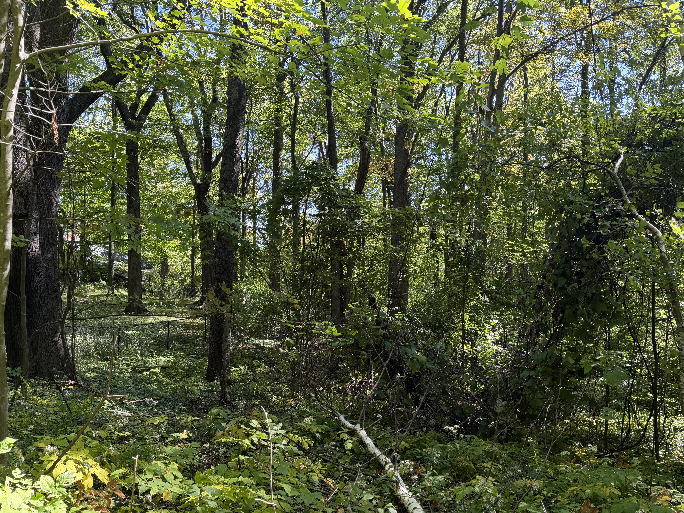
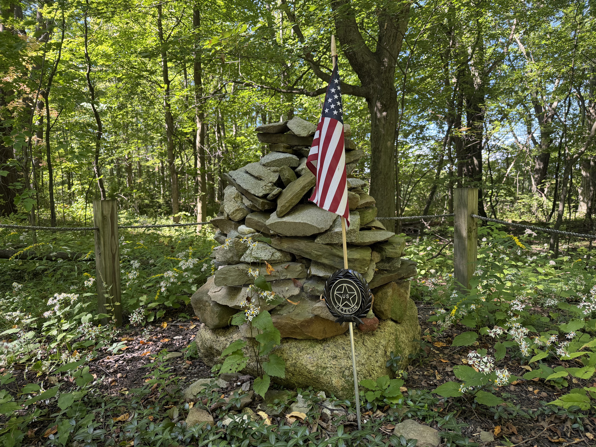
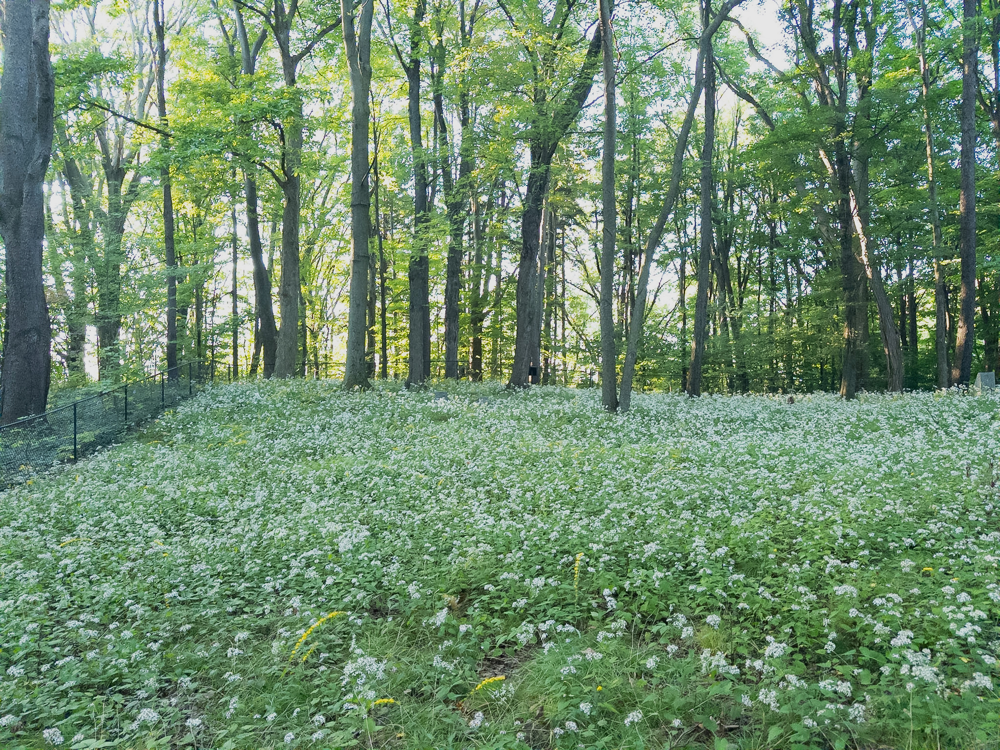
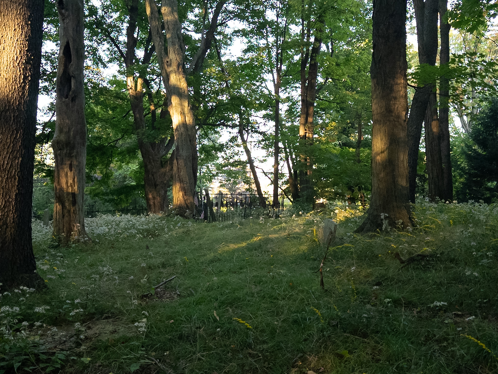
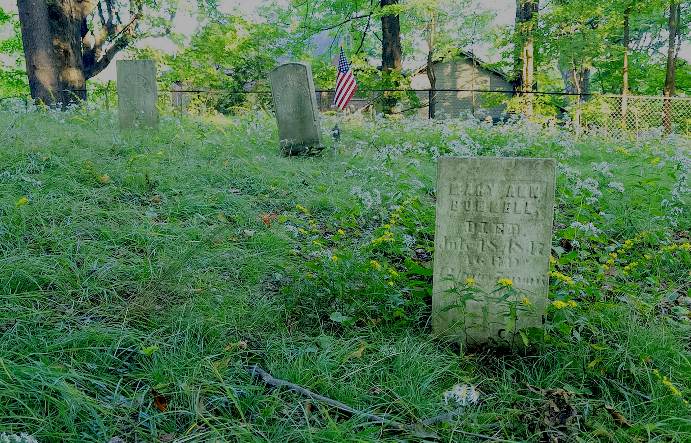
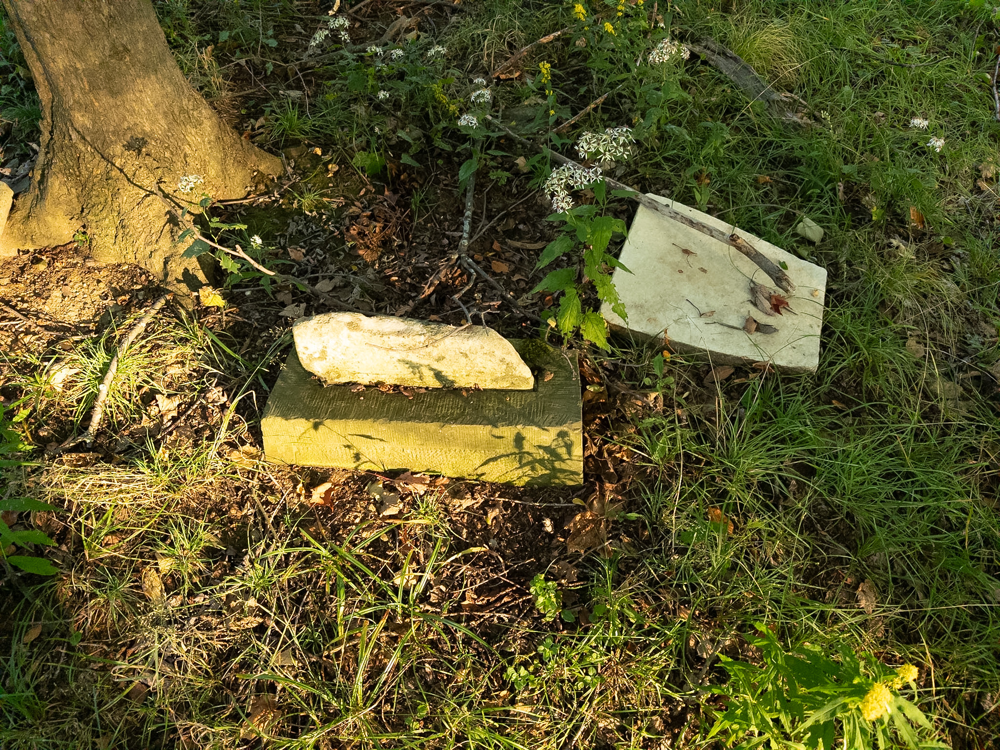
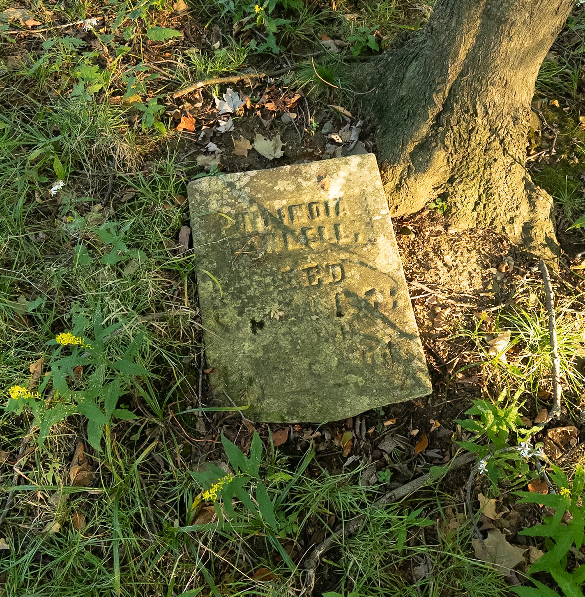
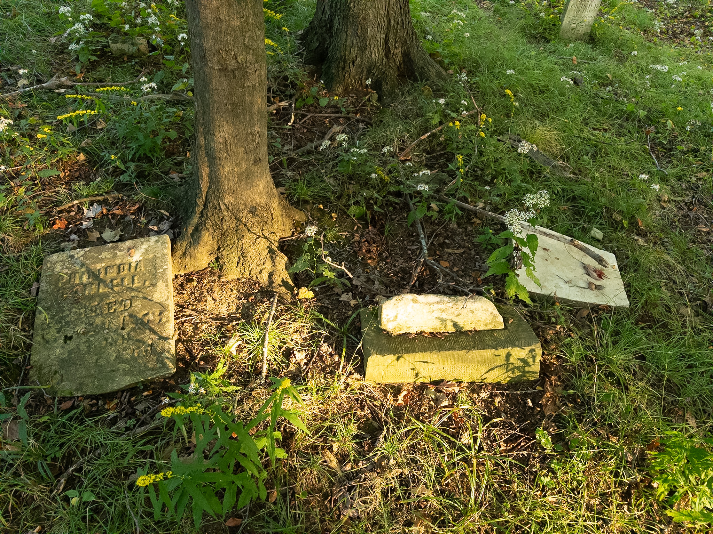
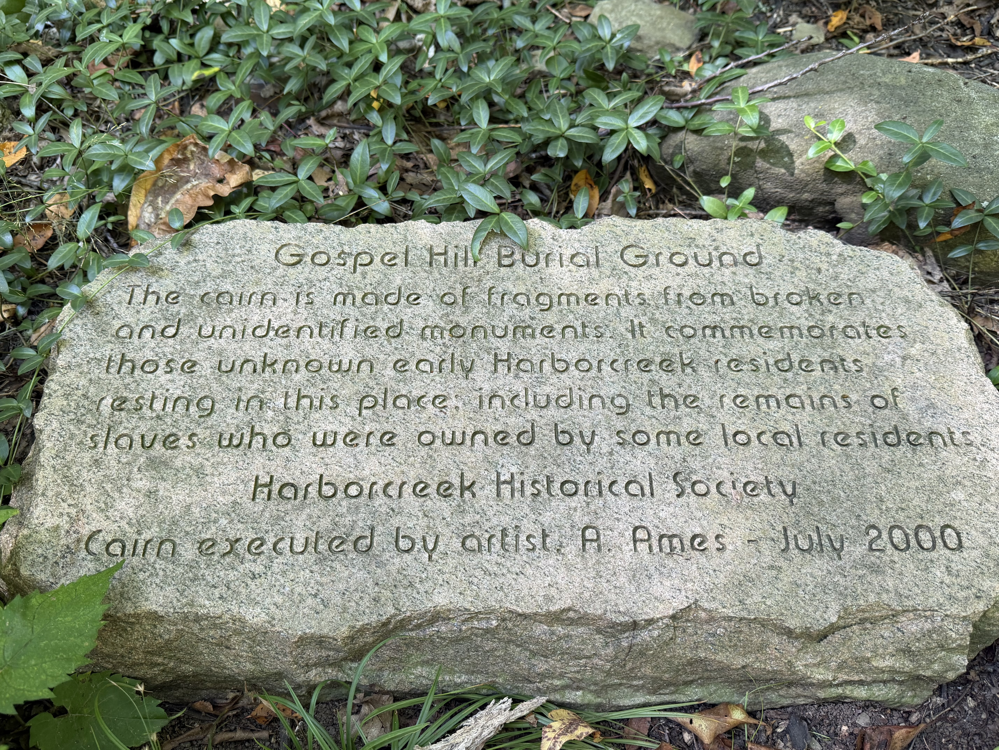

When I walk through the woods, I am reminded that death is all around us. I see it as I walk past a spider web with a fly caught in it. I hear it in the crunch of
dead leaves I walk on.

One of Behrend's hiking trails.
Death is something that I have always struggled to contend with. The idea of being gone from this world, and then eventually being forgotten, is
especially unsettling to me.
One day, I was hiking on Penn State Behrend's campus, which has stretches and streches of forests on its property. I've always loved hiking, so exploring the woods
on campus was something I'd do from time to time.
In one of these instances, I found a trail I'd never seen before, and just like many other times, I decided to check it out.
I stopped when I stood before a strange rock structure. It had a small fence around it made of cord and wood.
Staked next to it was a US flag, with an emblem attatched to it that said "US Vertern".
It looked like the same kind of flags they put next to grave stones that belong to veterns, though usually the emblem specifies which war they fought in.
I didn't know what to make of it, I guessed it was perhaps a student-created vetern memorial. I thought it was weird to be in the middle of the woods like this, though.

Those stones held a significance I didn't understand yet.
I continued on the trail, until I stumbled upon a sign that said "Gospel Hill Burial Ground" and my interest was piqued.
In relation to Gospel Hill, the sign states: "In 1831 Ann, the widow of Thomas Rees, set this parcel aside to be used specifically for a burial ground for the Gospel Hill neighborhood. It is believed the first burials were of two girls who drowned in six mile creek
in the second-decade of the 19th century. The oldest marked grave to have been placed in the cemetery goes back to 1829.
This was prior to official dedication of the site."
Of The Hill
There is not a lot of information online about this burial cite. Most of the information I was able to find was from
a plastic sign that sits right outside of the cemetery.
I was able to find a digital scan of the
sign courtesey of the Hagan History Center
Walking into the graveyard, it at first looks unassuming. There is an array of flora and fauna that makes it
difficult to see some of the graves from a distance.

But as you continue to walk into the site, you start to see more and more.

Shockingly, there are some graves that are not only still standing, but they are also legible .

But most of the graves are broken.



Although the forest around Gospel Hill buzzes with life, the site itself has an odd sense of peace to it. The people who were buried there
do not have duties to fulfill, people to take care of. They did all of those things many years ago, and now they lay and rest. I can feel that sentiment
as I walk around the graves, the wind softly blowing through the leaves.
Gone But Not Forgotten
The stone pile memorial that I mentioned at the beginning of this ancidote has a plaque that sits next to it. There, it explains
what it is memorializing.

I am always astounded by how things never truly go away. Most people would expect a cemetary that was abandoned for 60 years
would become part of the dirt, but it stood and presisted until it was remembered again. And now over a hundred years later it is still watched over and
preserved. So whenever I become uneasy about the thought of death, places like Gospel Hill remind me that what I do in this life
will influence the world around me even after I am long gone.
![picture of a wooden sign, the top of it designed in a triangle manner like
the roof of a house. The sign states: In 1831 Ann, the widow of Thomas Rees, set this parcel aside to be used specifically for a burial ground for the Gospel Hill neighborhood. It is believed the first burials were of two girls who drowned in six mile creek
in the second-decade of the 19th century. The oldest marked grave to have been placed in the cemetery goes back to 1829.
This was prior to official dedication of the site.](images/signEdited.jpg)
![picture of an informational sign. The main section of the sign states:In 1831, Ann Rees gave to Thomas Bunnell, Newman Wadsworth and William May land ... for the special purpose of a Burial ground and... to erect a school house for that neighborhood...
(No. 428, Court of Common Pleas, Erie, Pa)
Consequently, settlers built a schoolhouse, which they used as a Methodist church. These settlers had a reputation for devotion to their religion and the area around the school and church became known as Gospel Hill.
The schoolhouse was used as a church until 1896, and the last burial in the cemetery was 1921.
The schoolhouse was torn down in the late 1920s. In additon, it also shows a picture of two women standing in front of
the afroementioned school house. It also has a timeline that details key events related to the cemetery and also when key people were buried there.](images/gospelHillsign.jpg)